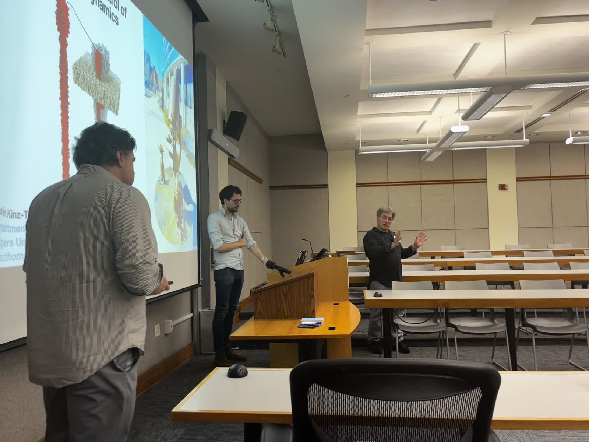
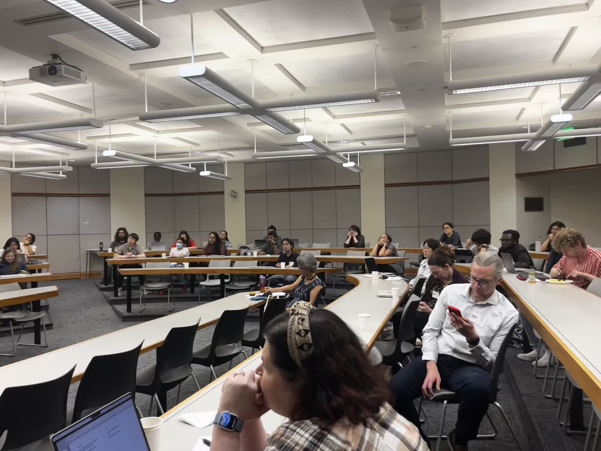
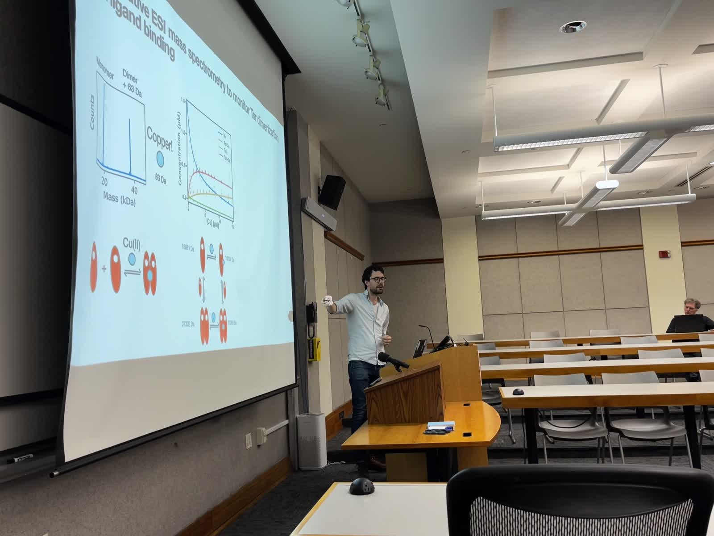
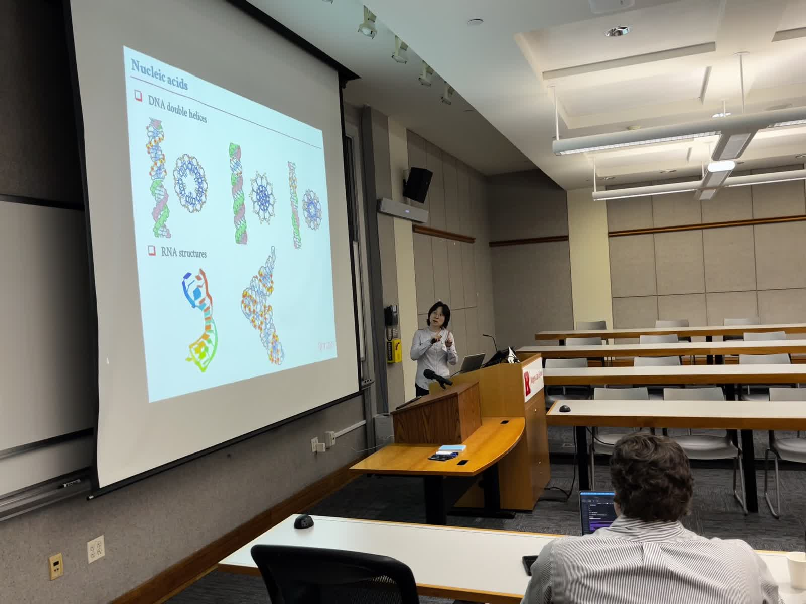
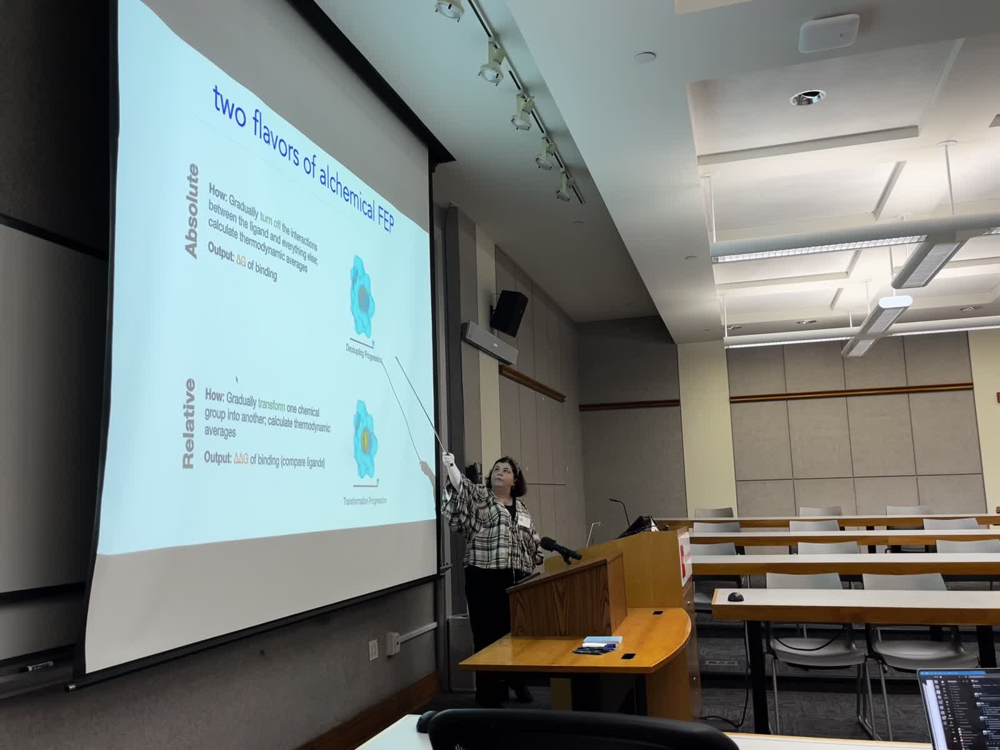
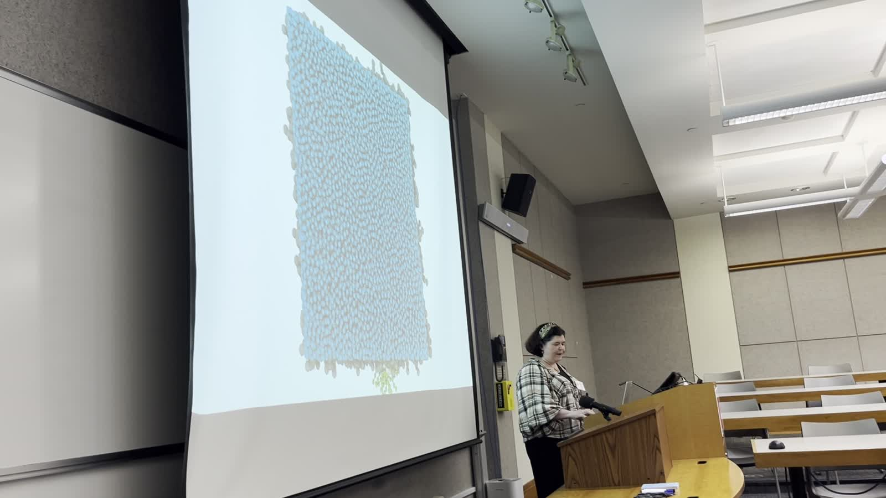
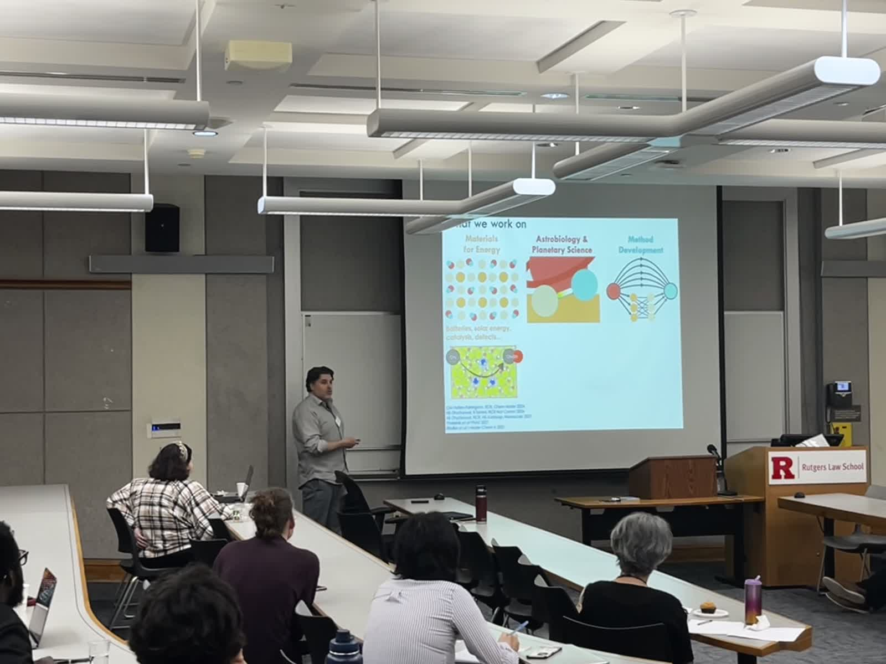
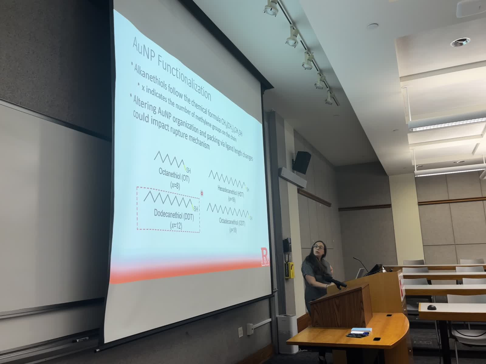
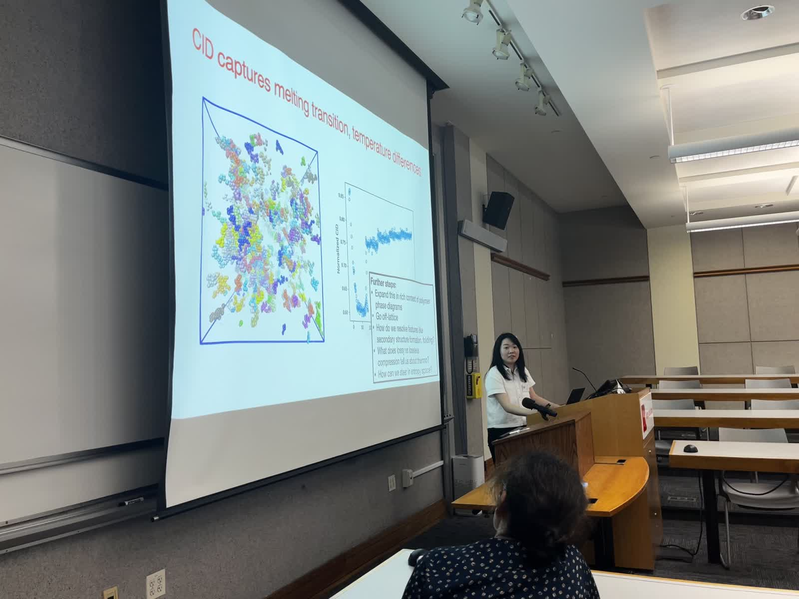

RCP Symposium
Program, highlights, and photos
The first Rutgers Chemical Physics Symposium was held on June 6, 2025 at Rutgers–Newark, bringing together faculty, students, and postdocs from New Brunswick, Newark, and Camden.
2025 symposium overview
The inaugural symposium created a forum for researchers from a wide range of departments to learn about one another’s interests and to discuss ways of strengthening chemical physics interactions across Rutgers.
In addition to research talks throughout the day, the program concluded with a round-table discussion focused on future community-building ideas and new cross-campus activities.
2025 program
Schedule at a glance
Morning
- 8:30–8:55 · Registration and breakfast
- 8:55–9:00 · Welcome remarks — Rick Remsing and Michele Pavanello
- 9:00–10:40 · Session 1 talks from Darrin York, Colin Kinz-Thompson, Lu Wang, and Grace Brannigan
- 10:40–10:55 · Coffee break
Midday
- 11:00–12:40 · Session 2 talks from Li Zhu, Deirdre O’Carroll, Julianne Griepenburg, and Rick Remsing
- 12:45–2:00 · Lunch
Afternoon
- 2:00–3:40 · Session 3 talks from Neepa Maitra, Ashley Guo, Jed Pixley, and Michele Pavanello
- 3:40–3:55 · Coffee break
- 4:00–4:50 · Session 4 talks from Jenny Lockard and Andy Nieuwkoop
- 4:50–5:50 · Round-table discussion on the future of chemical physics at Rutgers
Community ideas discussed
- A virtual RCP newsletter with highlights from all three campuses
- A Slack space and website for the RCP community
- Summer schools and tutorials for trainees across campuses
- Continuation and expansion of the annual symposium
- Student and postdoc social events and focused symposia
- Advertising RCP-relevant seminars and courses across campuses
Planned next steps
- Establish an RCP Early Career Committee
- Support communication efforts such as a newsletter and Slack site
- Prepare for the next annual symposium at Rutgers–New Brunswick
- Expand future events to include oral and poster presentations
Photo gallery
Scenes from the 2025 symposium








